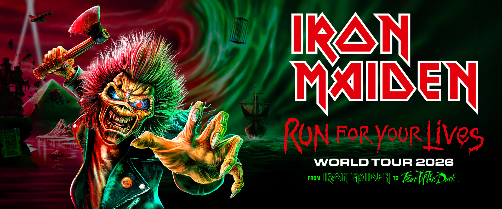
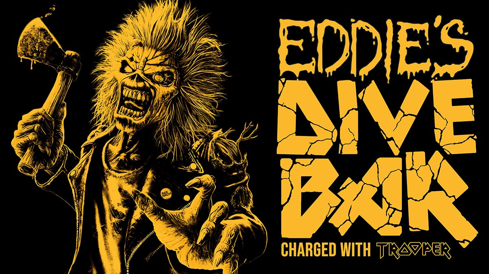
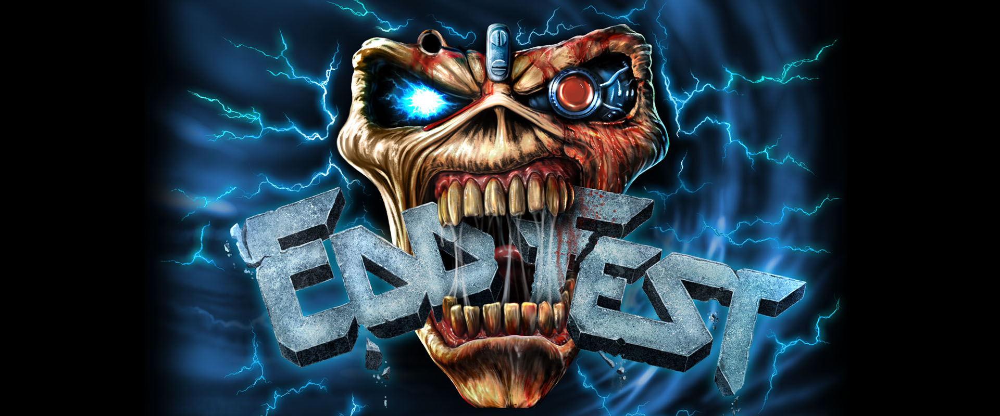
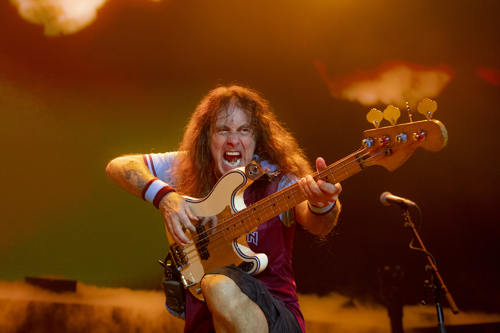
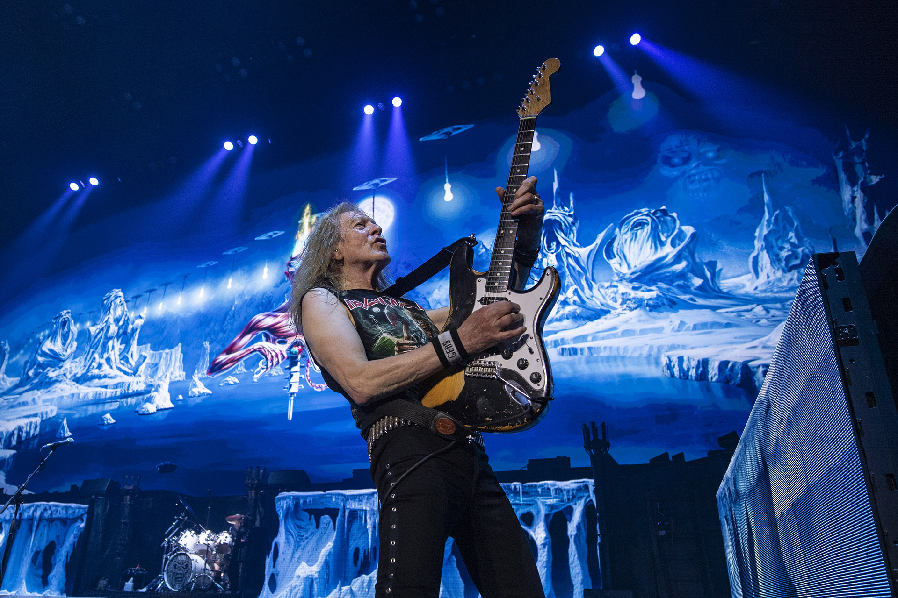
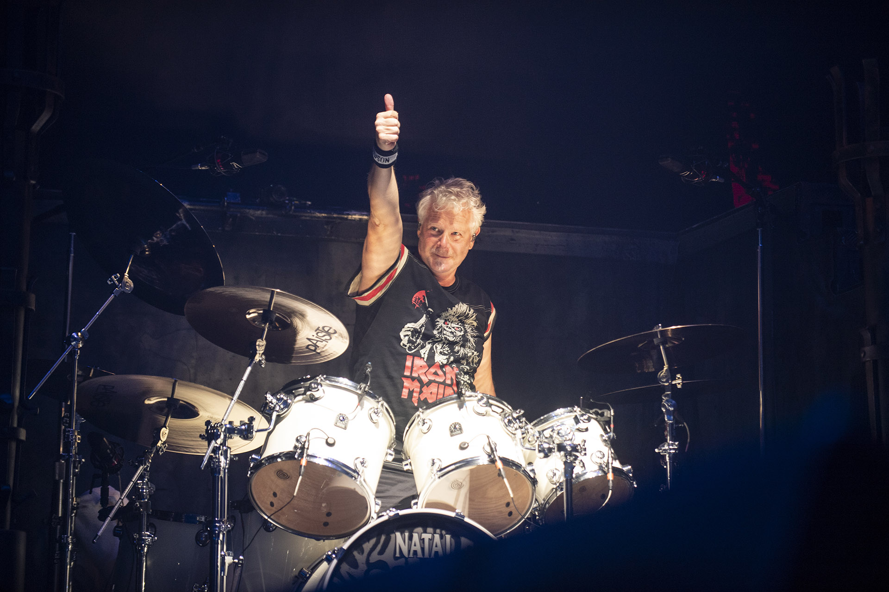

Ez egy páratlan történet – egy hangzás, amely megváltoztatta a világot. Azóta, hogy Steve Harris basszusgitáros víziója megszületett Kelet-London szerény munkásosztálybeli vidékén, az Iron Maiden 50 év alatt intézménnyé nőtte ki magát, és idén ünneplik 1975-ös alapításukat egy olyan turnéval, amely méltó ahhoz a valóban páratlan fél évszázadhoz. A kétéves Run For Your Lives világkörüli turné már elvitte az Iron Maident az Egyesült Királyság és Európa stadionjaiba, de ahhoz, hogy igazán megértsük az Iron Maiden történetét, először vissza kell mennünk a kezdetekhez. Ez több, mint világ körüli turnék vagy slágerlistás lemezek, amelyek minden időzónában inspirálták a rajongótábort. Az Iron Maiden szinte mitikus státuszát és tagadhatatlan kulturális hatását nem lehet eléggé hangsúlyozni. Mégis az a tény, hogy az övék egy olyan történet, amely a mai napig kibontakozik, valóban említésre méltó. A Maiden egyszerűen nem ejt foglyokat – sem akkor, sem most, és az elmúlt évtizedekben, mióta megalapították magukat, a félelem nélküli kreatív függetlenség, a rajongók iránti rendíthetetlen odaadás és a kritikusok iránti vidám közöny megtestesítőivé váltak, amelyet csak legendásnak nevezhetünk.
Name

Name
Name
Turnédátumok
- Május
- Június 12
- Július

Budapest Aréna
Május 27-28 2025
Budapest, Magyarország
Halestrom mellett

Letňany Reptér
Május 31 2025
Letňany, Csehország
Halestrom mellett

TIPOS Arena
Június 1 2025
Pozsony, Szlovákia
Halestrom mellett